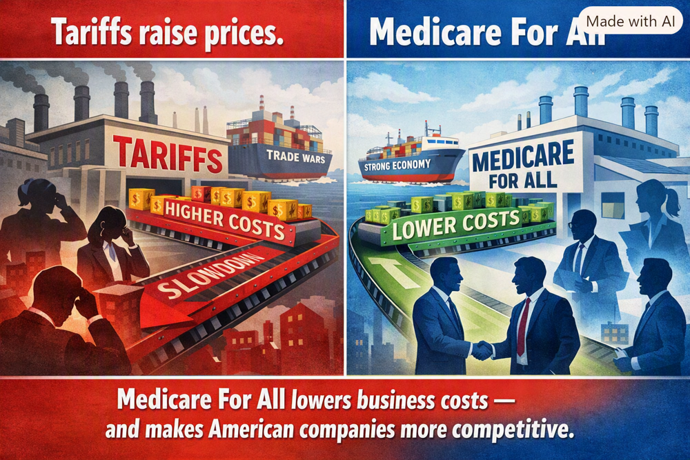

Article 27: Medicare for All, American Manufacturing, and the Cost of Competing
Could healthcare financing reform help U.S. manufacturing more sustainably than tariffs?

Download illustrated Word document (.docx)
Illustration supplied by the author. The comparison is a policy argument, not a quantified economic finding.
A different way to think about American competitiveness
When we discuss bringing manufacturing jobs back to the United States, tariffs dominate the conversation. But another cost deserves attention: the cost and complexity of financing healthcare through employment. What if American businesses could compete without having to manage a separate health insurance benefit for their workers? Medicare for All raises that possibility.
The cost is not only the insurance premium
Employers who sponsor coverage face premium contributions, benefit administration, negotiations with insurers, annual renewals, and uncertainty over future increases. Workers can experience “job lock”: reluctance to leave a position, start a company, or change careers because health coverage is tied to employment. These effects are not captured by the sticker price of a manufactured product, yet they shape hiring, investment, and entrepreneurship.
What competitors abroad actually do
Many European and Asian economies finance healthcare through combinations of taxes, social insurance contributions, employer payments, and regulated insurance. They are not all free of employer healthcare obligations. Germany, for example, uses payroll-linked social insurance with employer contributions; other countries rely more heavily on tax financing. The competitive question is therefore not whether foreign employers pay nothing, but how each country distributes healthcare costs and administrative responsibilities.
What Medicare for All could change
Under a carefully designed single-payer system, American employers could stop purchasing and administering conventional employee health insurance. The costs of care would not disappear: they would be financed through the new system, potentially including business taxes or payroll-based contributions. Whether a particular manufacturer saves money would depend on the replacement financing, wage adjustments, and its current benefit costs.
Tariffs and healthcare reform operate differently
A tariff increases the cost of specified imported goods and can protect some domestic producers, but it can also raise input costs for manufacturers that rely on imported parts and materials. Healthcare financing reform addresses a different issue: the underlying cost and administration of employee benefits. It might reduce a structural burden on firms across many industries without increasing import prices. The policies are not perfect substitutes; they have different effects on consumers, supply chains, public revenue, and investment.
A possible advantage for bringing production home
If a reform reduces the net cost of employing workers in the United States, manufacturers may find domestic production more attractive. They might expand hiring, invest in equipment, raise compensation, or lower prices. But factory location also depends on labor skills, energy prices, infrastructure, regulation, market access, exchange rates, and supply chains. Healthcare reform alone cannot guarantee reshoring.
The broader price dividend—and its limits
Lower net operating costs could put downward pressure on some prices, especially in competitive markets. That would be a welcome improvement in purchasing power. It would not automatically produce economy-wide deflation, and any reduction in employer premiums must be evaluated alongside the taxes that replace them. Likewise, healthcare savings depend on actual program design, negotiated prices, administrative efficiency, and access to care.
The comparison America should make
Before claiming that one approach is more effective than another, policymakers should model both under consistent assumptions: net employer cost per worker, consumer prices, wages, domestic investment, manufacturing employment, federal revenue, and household healthcare expenses. Compare tariff effects on imported inputs with the effect of changing healthcare financing. Publish the assumptions and allow independent scrutiny.
A systems-engineering opportunity
My argument is that healthcare financing is not just a social policy issue. It is part of America’s industrial cost structure. Rather than treating healthcare and manufacturing as separate debates, we should examine how they interact. Medicare for All could be an important tool for improving competitiveness—if its financing is designed to deliver real net savings for employers and families.
Conclusion
The goal should not be to win an ideological argument about tariffs or healthcare. It should be to build an economy in which American workers receive reliable medical care and American manufacturers can compete on quality, productivity, and innovation. That is a proposal worth testing with evidence.
Author: Willis Butts | Medicare for All